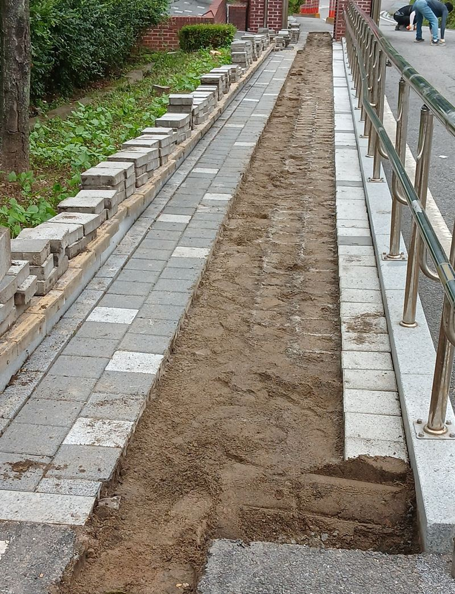
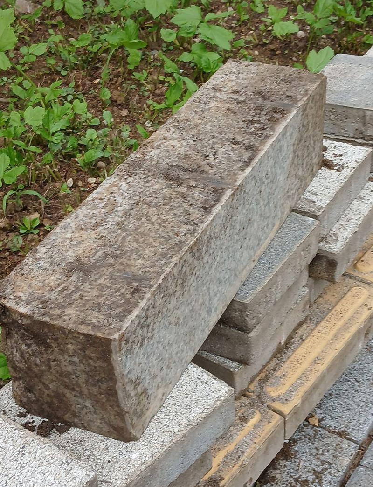
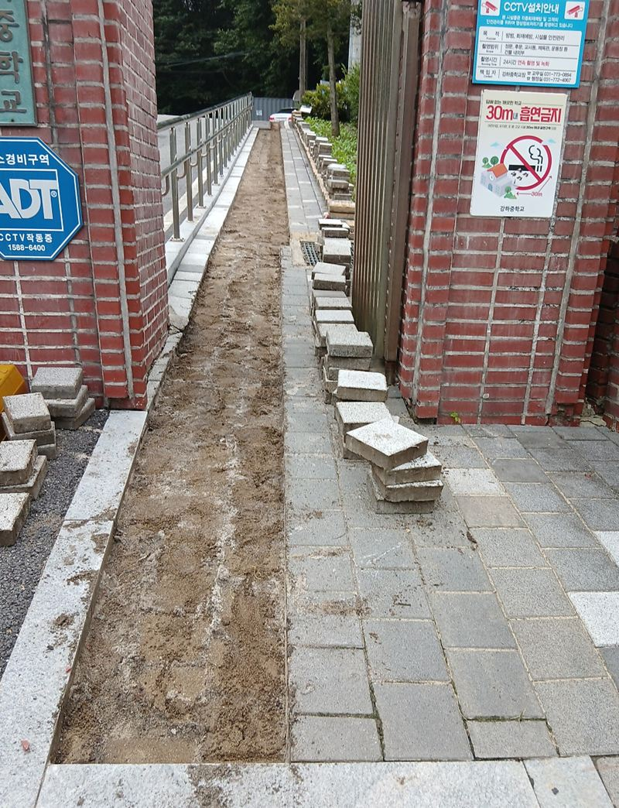
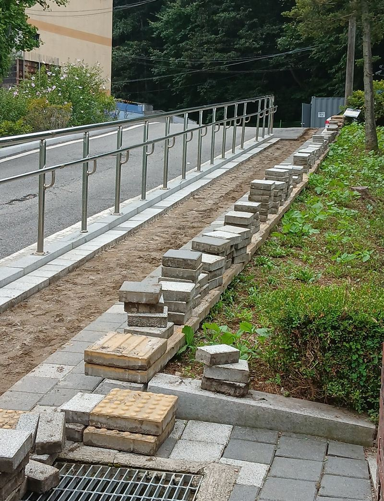
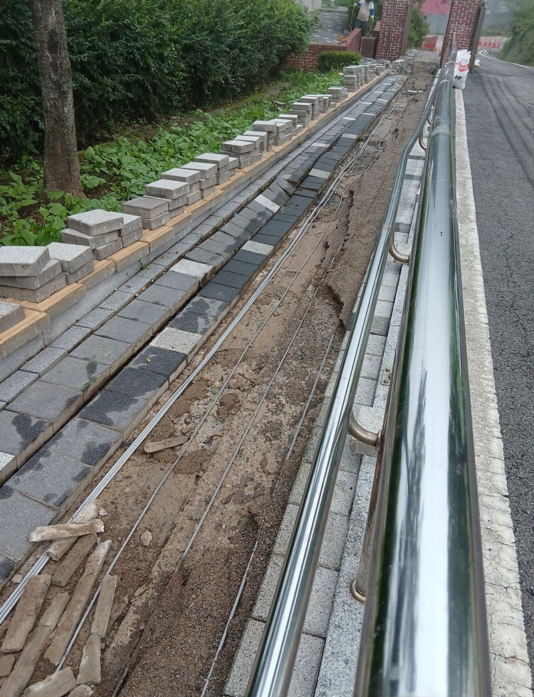
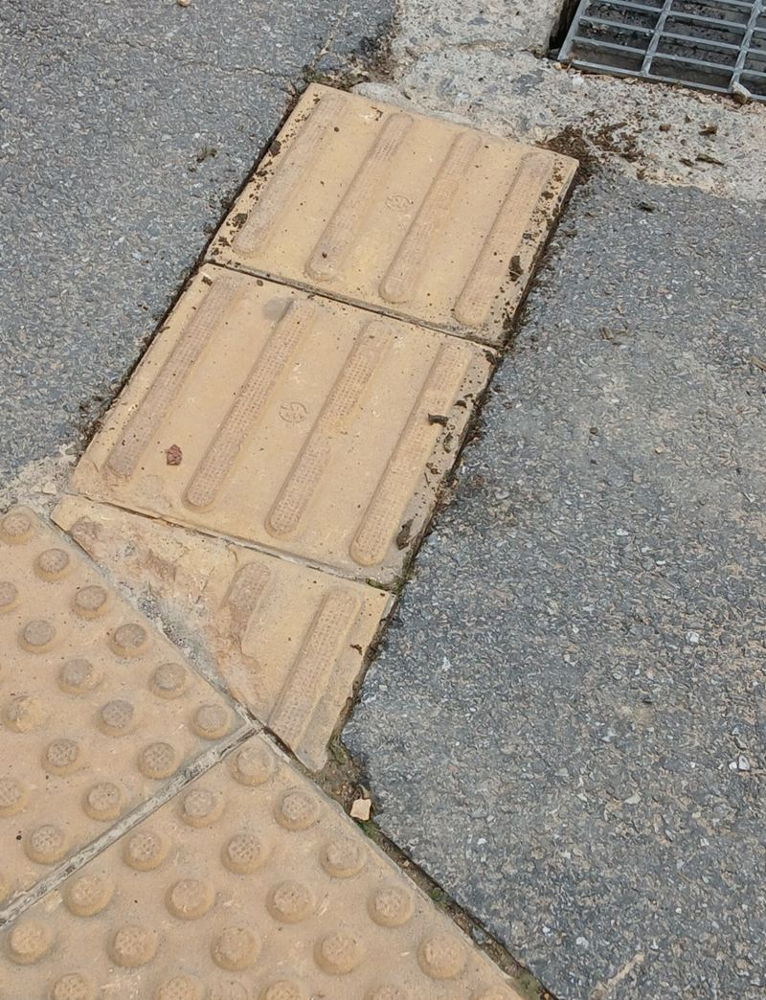

양평 보도블럭 교체 공사 방법과 순서
← 밀어서 전후 비교 →
겨울마다 경사진 등굣길이 얼어서 학생들이 미끄러진다는 학교였어요. 방학을 이용해 보행로 아래에 전열선을 묻기로 했고, 그러려면 보도블럭을 전부 걷었다가 다시 깔아야 했어요. 블럭을 새로 놓는 것보다 그 아래 바닥을 다지는 데 더 시간을 들였어요.
| 현장 | 양평 강하면 중학교 등굣길 보행로 |
|---|---|
| 이유 | 겨울 결빙 사고를 막기 위한 열선 매립 |
| 한 일 | 블럭 철거 → 기초층 보강·다짐 → 점자블럭 → 일반 블럭 → 모래 충전 |
| 변수 | 작업 중 비로 모래가 쓸려 나가 보강량이 늘어남 |
블럭보다 바닥이 먼저예요
보도블럭이 몇 년 만에 울퉁불퉁해지는 건 대부분 블럭이 아니라 아래 모래·자갈층 때문이에요. 걷어 보니 이 현장도 군데군데 배수층이 무너져 있었고, 작업 중간에 비까지 내려 모래가 쓸려 나갔어요. 그대로 덮었다면 얼마 안 가 꺼졌을 거예요.


부족한 모래와 자갈을 채우고 진동 콤팩터로 단단히 다졌어요. 틈새용으로는 일반 흙이 아닌 고운 모래를 써야 빈틈이 잘 차고 물도 잘 빠져요.
열선을 묻은 뒤 블럭 깔기
-
열선 구간 정리
열선이 지나갈 구간을 표시하고 바닥을 평평하게 다듬은 뒤, 열선 위로 블럭이 안정적으로 앉도록 받침층을 만들었어요.


-
점자블럭부터 배치
시각장애 학생이 따라 걸을 수 있게 점자블럭을 먼저 줄 맞춰 놓고, 나머지 일반 블럭을 그 기준에 맞춰 깔았어요.

-
일반 블럭 시공
색과 무늬를 원래 보행로와 맞춰 순서대로 깔아 나갔어요.

틈새 충전과 마지막 다짐
블럭 사이 틈에 고운 모래를 골고루 쓸어 넣고, 콤팩터로 전체 면을 한 번 더 다졌어요. 모래가 틈을 채워야 블럭끼리 서로 붙잡아서 흔들리지 않아요. 남은 모래와 잔재는 정리해 학생들이 바로 걸을 수 있게 마무리했어요.
| 단계 | 빠뜨리면 생기는 일 |
|---|---|
| 기초 다짐 | 몇 달 뒤 블럭이 꺼지고 물웅덩이가 생겨요 |
| 점자블럭 기준 | 줄이 틀어져 다시 깔아야 해요 |
| 틈새 모래 충전 | 블럭이 흔들리고 모서리가 깨져요 |
보도블럭 공사, 이런 곳에서 많이 맡겨요
- 학교·유치원 보행로방학이나 휴원 기간에 맞춰 일정을 잡아요.
- 아파트 단지 산책로꺼지고 튀어나온 블럭 때문에 넘어질 뻔했다는 민원이 있을 때예요.
- 상가 앞 인도배관 공사 후 블럭을 대충 덮어 높낮이가 생긴 자리를 다시 깔아요.
보도블럭 교체 질문
기존 블럭을 다시 써도 되나요?
깨지지 않은 블럭은 다시 쓸 수 있어요. 부족한 만큼만 같은 색으로 맞춰 채워요.
공사 중 통행은 어떻게 하나요?
구간을 나눠 한쪽씩 작업하거나, 휴일·방학에 맞춰 통행을 막고 진행해요.
열선 공사도 직접 하시나요?
이 현장은 열선 설치에 맞춰 블럭 철거와 재시공을 맡았어요. 전기 연결은 해당 업체와 일정을 맞춰요.
일부만 꺼진 곳도 고쳐 주나요?
네, 꺼진 구간만 걷어 다시 다지고 까는 부분 보수도 해요.
보도블럭 색이 바래서 새 블럭과 다르면요?
새 블럭을 섞어 깔 때는 눈에 덜 띄는 가장자리에 넣거나, 구간을 나눠 색 차이가 자연스럽게 보이게 배치해요.
경사진 보행로도 같은 방식인가요?
경사로는 블럭이 밀리지 않게 경계석과 다짐을 더 신경 써서 시공해요.
다른 바닥 보수 현장
보행로 전체와 꺼지거나 들뜬 구간을 찍어서 보내 주세요.
전화 상담 010-4517-9872